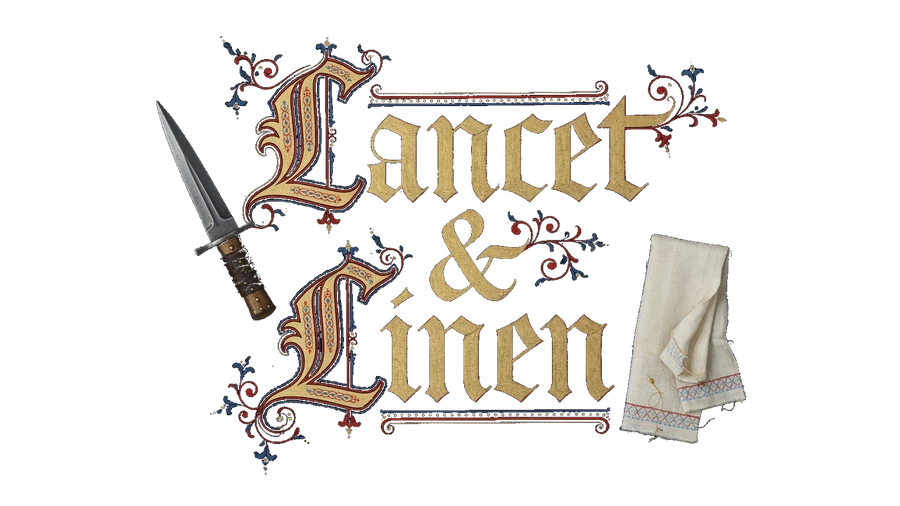
Nuremberg, 1382. A lancet, clean linen, and a steady hand — that is all a Bader owns. The rest you will have to earn. Nürnberg, 1382. Ein Lanzett, sauberes Leinen und eine ruhige Hand — mehr besitzt ein Bader nicht. Alles andere musst du dir verdienen.
Browser · Coming to Steam for Windows & Mac · iPhone & iPadBrowser · Bald auf Steam für Windows & Mac · iPhone & iPad
A medieval life simulationEine mittelalterliche Lebenssimulation
The Bader shaved beards, drew teeth, let blood, dressed wounds and kept the bathhouse hot — honest work that the town needed and never quite respected. In Lancet & Linen you live that life day by day: read the patient, choose the art, steady the hand, and live with what comes of it. Der Bader schor Bärte, zog Zähne, ließ zur Ader, verband Wunden und hielt die Badestube heiß — ehrliche Arbeit, die die Stadt brauchte und nie ganz achtete. In Lanzett & Leinen lebst du dieses Leben Tag für Tag: den Kranken lesen, die Kunst wählen, die Hand ruhig halten — und mit den Folgen leben.
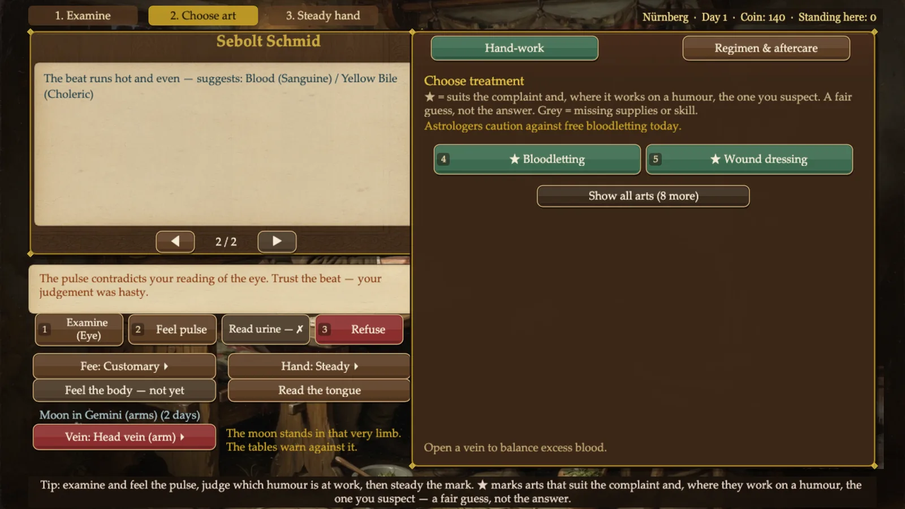
Look, feel the pulse, read the urine and the tongue. Judge which humour is at work and pick from dozens of period arts — knowing a ★ is a clue, never a promise. Set your fee, or treat for nothing and let the town remember.Schau hin, fühl den Puls, lies Harn und Zunge. Beurteile, welcher Saft wirkt, und wähle aus Dutzenden zeitgenössischer Künste — ein ★ ist ein Hinweis, kein Versprechen. Nenne deinen Lohn oder hilf umsonst, und die Stadt merkt es sich.
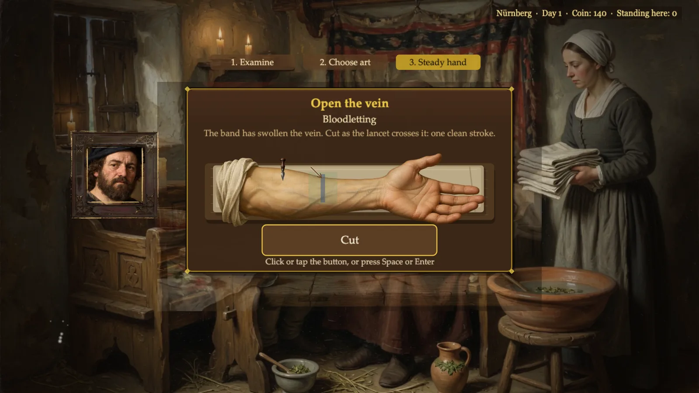
Bloodletting, the tooth key, cupping, stitching, drawing an arrow, the trepan — the hand-work is yours to perform. Choose the vein by the moon's sign, rock the tooth in a steady rhythm, and feel the difference a trained hand makes.Aderlass, Zahnschlüssel, Schröpfen, Nähen, Pfeilziehen, Trepanation — die Handarbeit führst du selbst aus. Wähle die Ader nach dem Stand des Mondes, wiege den Zahn im ruhigen Takt und spüre, was eine geübte Hand ausmacht.
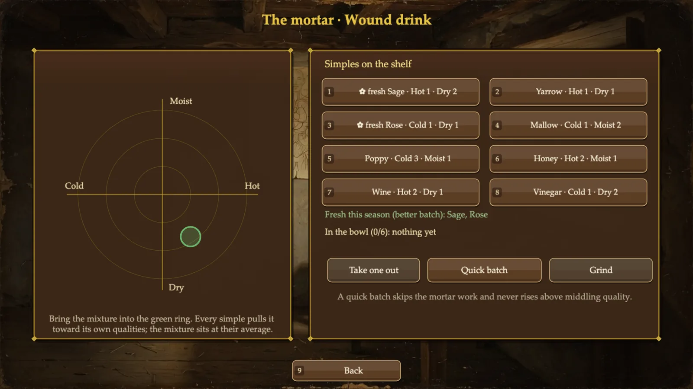
At the mortar every simple pulls the mixture toward its own qualities. Sage, rose, poppy, honey, vinegar — balance them into wound drinks, salves and theriac, and sell what your own bench can make.Am Mörser zieht jedes Kraut die Mischung zu seinen eigenen Qualitäten. Salbei, Rose, Mohn, Honig, Essig — bring sie ins Gleichgewicht zu Wundtrank, Salbe und Theriak und verkaufe, was deine eigene Bank hergibt.
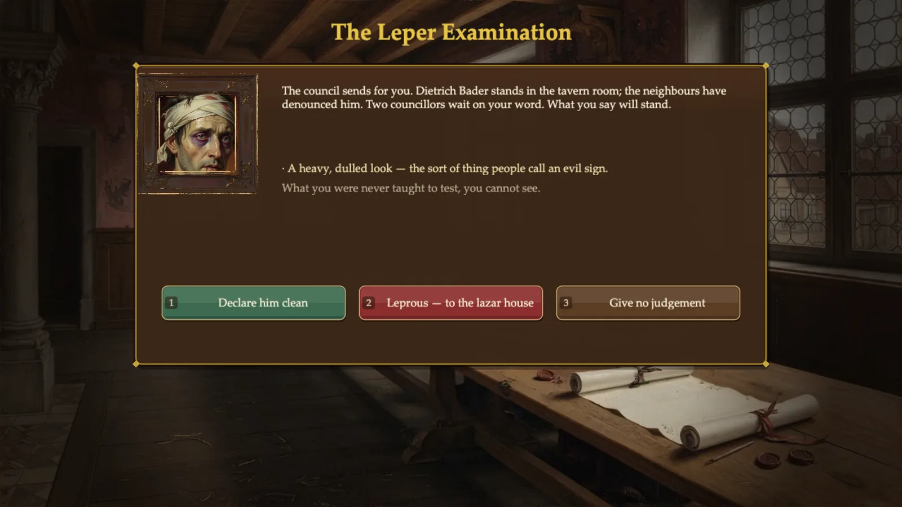
The council sends for you. A man has been denounced by his neighbours; two councillors wait on your judgement. Clean, or to the lazar house? Some decisions in this game are not about coin at all.Der Rat lässt dich holen. Die Nachbarn haben einen Mann angezeigt; zwei Ratsherren warten auf dein Urteil. Rein — oder ins Siechenhaus? Manche Entscheidungen in diesem Spiel haben mit Münzen nichts zu tun.
“Toll for the cart, Bader. Or does the guild already claim you?”„Zoll für den Karren, Bader. Oder hat dich die Zunft schon?“
The city guard at Nuremberg's gateDie Stadtwache am Nürnberger TorMore than a practiceMehr als eine Praxis
From a market stall to a licensed bathhouse. Buy stock, pay wages, keep the fire going and the upkeep paid.Vom Marktstand zur zugelassenen Badestube. Ware kaufen, Löhne zahlen, das Feuer am Brennen und die Unterhaltskosten im Griff halten.
Court, marry, raise an heir. Hire apprentices and bath maids — and learn that loyalty is earned, not paid.Werben, heiraten, einen Erben großziehen. Lehrlinge und Bademägde einstellen — und lernen, dass Treue verdient und nicht bezahlt wird.
Honour gates the guild. Earn standing, seek offices and titles, and find out what the council really wants.Ehre öffnet die Zunft. Gewinne Ansehen, bewirb dich um Ämter und Titel und finde heraus, was der Rat wirklich will.
Patients come back. Names fade in towns you leave. Three acts, journalled choices and many endings — including a dynasty.Patienten kommen wieder. Dein Name verblasst in Städten, die du verlässt. Drei Akte, festgehaltene Entscheidungen und viele Enden — bis hin zur Dynastie.
Six origins, each with its own strengths, debts and reputation — from the Bader's son who inherited the trade to the executioner's kin the town will never quite forgive.Sechs Herkünfte mit eigenen Stärken, Schulden und eigenem Ruf — vom Badersohn, der das Handwerk geerbt hat, bis zur Henkersverwandtschaft, der die Stadt nie ganz verzeiht.
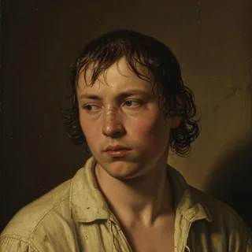
Bader's sonBadersohn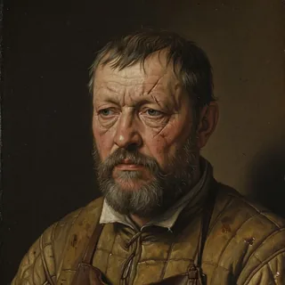
Field surgeonFeldscher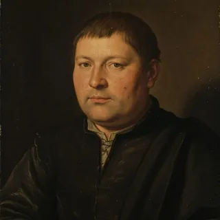
Executioner's kinHenkerssippeThe worldDie Welt
Every town draws its own kind of patient, keeps its own market day and offers arrangements nobody else will. The road has tolls, weather and strangers. And when your masters have taught you all they know, the Wanderjahre wait: Prague, Montpellier, Bologna, Paris.Jede Stadt zieht ihre eigenen Kranken an, hat ihren eigenen Markttag und bietet Abmachungen, die es sonst nirgends gibt. Die Straße hat Zölle, Wetter und Fremde. Und wenn deine Meister dir alles beigebracht haben, warten die Wanderjahre: Prag, Montpellier, Bologna, Paris.
ScreenshotsBilder aus dem Spiel
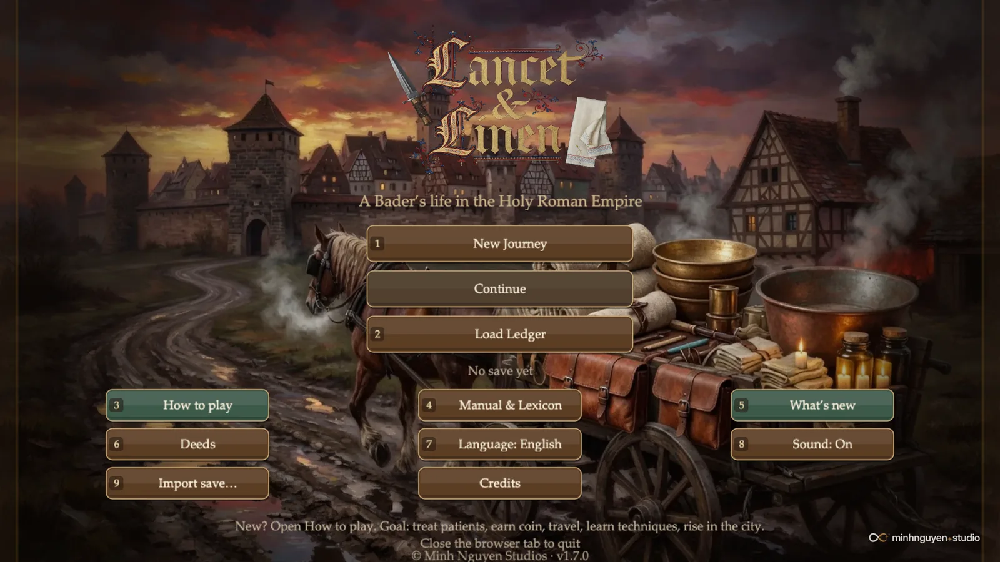
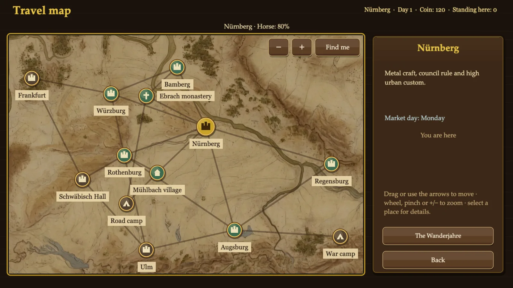
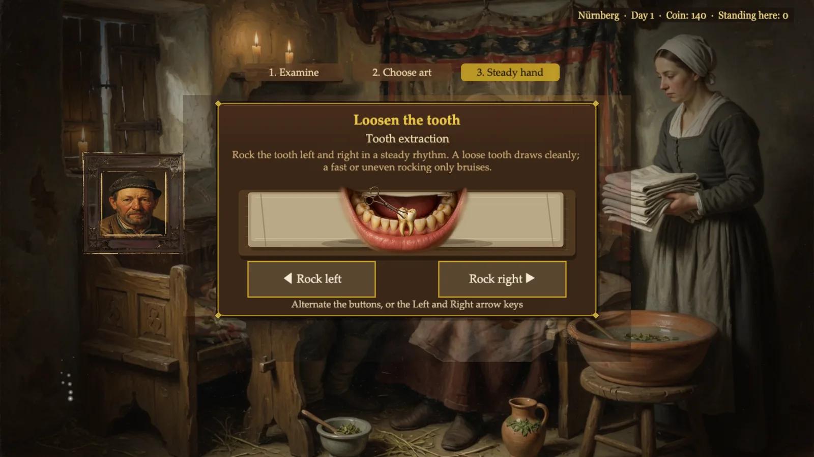
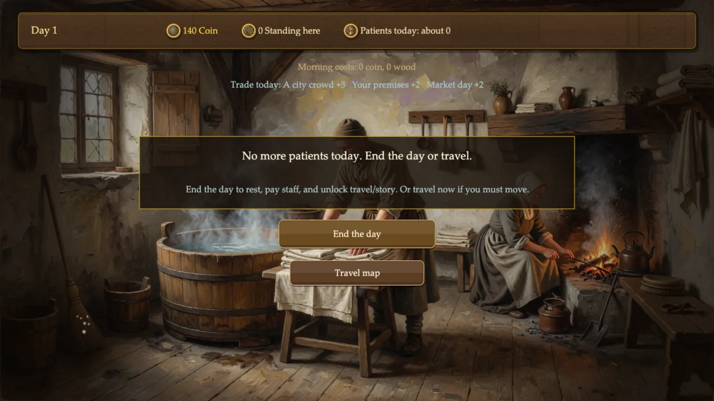
History, honestlyGeschichte, ehrlich erzählt
The game ships with an in-game lexicon that marks what is attested, what is regional framing and what is a deliberate simplification for play. The medicine in Lancet & Linen is period motif, not medical advice — the game never claims a treatment works.Im Spiel steckt ein Lexikon, das kennzeichnet, was belegt ist, was regionale Einordnung und was bewusste Vereinfachung fürs Spiel. Die Medizin in Lanzett & Leinen ist zeitgenössisches Motiv, kein ärztlicher Rat — das Spiel behauptet nie, dass eine Behandlung wirkt.
Fully bilingual interface and writing.Oberfläche und Texte komplett zweisprachig.
Keyboard, mouse or touch. Text size, effects and gore settings.Tastatur, Maus oder Touch. Einstellbare Textgröße, Effekte und Blutdarstellung.
Saves stay on your device. No account, no tracking.Spielstände bleiben auf deinem Gerät. Kein Konto, kein Tracking.
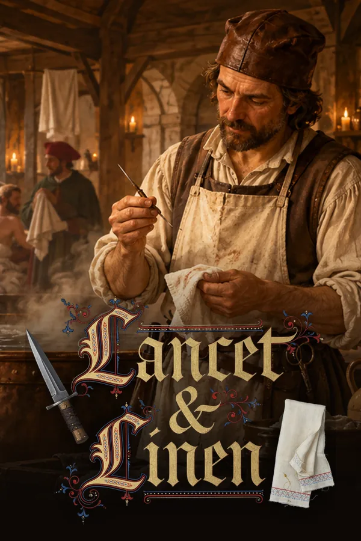
Start your journey today in the browser — no download, no account.Beginne deine Reise heute im Browser — ohne Download, ohne Konto.